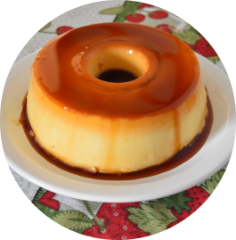

Pudding
Description
A delicious and simple pudding recipe to sweeten your day
Ingredients
- 3 eggs
- 1 can of condensed milk
- 1 can of milk
- 1 carton of cream
Steps
- In a pudding pan, melt the sugar, leaving the pan caramelized.
- Place the eggs in a blender with the condensed milk, milk and cream.
- Then blend for 20 minutes.
- Pour into the caramelized mold and place in a preheated oven, in a bain-marie, at 180 degrees Celsius.